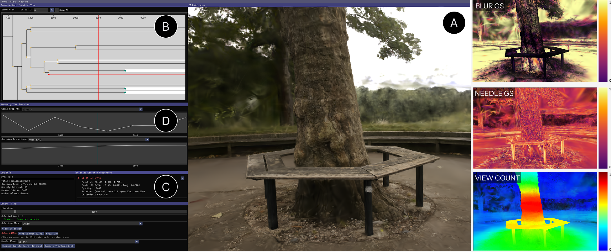

Inside Vis4GSSystem overview

From the rendered scene to the story behind it.
IEEE VIS 2026 · Short paper
Vis4GS
A Visual Analytic Tool for 3D Gaussian Splatting Reconstruction
A reconstruction can look almost right, yet still contain puzzling artifacts. Vis4GS helps researchers inspect the underlying Gaussians and trace how they evolved during training.
Visual analytics3D Gaussian SplattingArtifact diagnosis
A little more about the research
The question
How can we connect an artifact in a rendered scene to the primitives and optimization history that help explain it?
The approach
Linked views bring scene inspection, Gaussian properties, training timelines, and densification genealogy into one investigation.
My research experience
First author of Vis4GS, accepted as a short paper at IEEE VIS 2026. The paper presents the system and its evaluation.